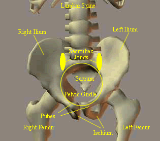
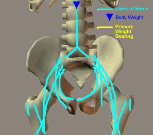
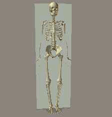
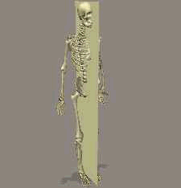
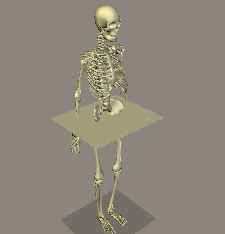
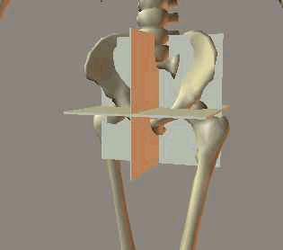
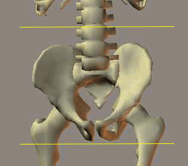
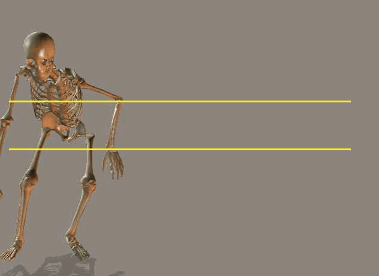
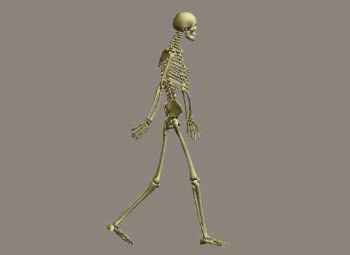
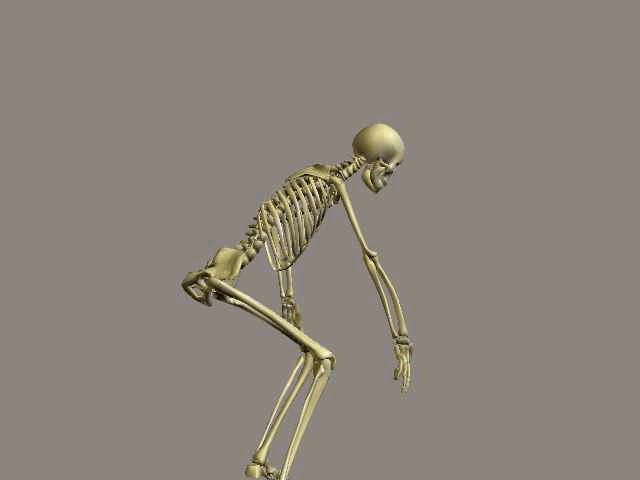

Subjective
Observation by a person, clinician, coach, or reviewer. In this record, subjective observation began with the functional difference between walking and skating.
Ballistic vs controlled rolling motion
HandicapSkater biomechanics is connecting pelvic mechanics, walking load, skating motion, and the current wearable evidence model.
HandicapSkater began with an observation: walking and skating did not affect my body the same way.
After a 1983 pelvic, SI, and hip injury, walking became the repeated test that exposed the problem. Inline skating changed the movement pattern from repeated vertical stepping to controlled rolling.
In 1991, that difference became a functional hypothesis the first time I donned skates: skates reduced the burden of mobility while preserving movement through the world.
This page explains the biomechanics behind that hypothesis. It connects the accepted movement analysis to the modern WHOOP, Strava, Kubios, and Polar H10 evidence record.
Observation, classification, testing
In my 2005 legal pleading, Discrimination of HandicapSkater Accessibility, I described this case through the scientific method: public observation, classification of facts, inductive theory, and further testing.
The original observation was direct. Walking and skating produced different functional results. Walking is active but ballistic. It repeatedly loads the pelvis, SI joints, and hips through vertical stepping and impact shocks. Skating is active controlled rolling. It uses horizontal propulsion, posture control, route choice, timing, and continuous motion.
The hypothesis is that inline skates can function as a mobility aid because rolling contact preserves more usable forward motion between pushes, while walking repeatedly redirects, brakes, and rebuilds forward motion through each ballistic step.
This does not violate conservation of momentum; both walking and skating exchange momentum with the ground. The difference is how much usable forward motion carries over between movement cycles.
The biomechanics below explain why the difference matters.
Pelvic mechanics
The pelvic girdle supports the head, arms, and trunk and coordinates rotational movement between the upper and lower halves of the body. During normal walking, the upper body rotates one direction while the lower body rotates the other, then the pattern reverses.
The pelvis is the hinge coordinating that motion. The SI joints act as shock absorbers as each step sends impact shock through the MSK region.
For a pelvic, SI, and hip injury history, that repeated walking pattern matters because the same region that coordinates motion also receives the step forces.


Linked joints and force transfer
A kinematic chain produces movement through linked joints and their degrees of freedom. In the pelvis, small changes in motion can transmit stress across the pelvic girdle.
The biomechanics analysis describes how the head, arms, and trunk create compression through the SI joints. That force can travel through the pelvic lines of force, the pubic symphysis, the acetabulum, and into the femur.
This is why walking mechanics are not merely about the foot hitting the ground. The whole MSK system participates in the movement and receives the load.
Source context from Norkin and Levangie, Hamill and Knutzen, and Lee.
Planes of motion
Movement is described across three planes: frontal, sagittal, and transverse. Walking involves all three, which is why pelvic motion can create vertical displacement, rotation, and torsion at the same time.



Walking as a complex pelvic movement
Walking is one of the more complex human motions because it involves all three planes of movement. The pelvis tilts laterally in the frontal plane, shifting the body center of gravity and causing vertical displacement. It also rotates in the transverse plane, which can place torsion or twist through the SI joints.
The walking (gait) is described as movement involving vertical, side to side, and front to back displacement of the body center of mass. Nordin and Frankel described this sinusoidal displacement as about 3 cm vertically, 4 cm side to side, and 2 cm front to back.
Schneck and Bronzino were cited for the low efficiency of walking, where the body alternates lowering and raising the center of mass while the feet provide repeated pushing and braking. That is the movement problem the skating hypothesis addresses.

Impact shock and walking load
Walking and skating create different load paths through the hip, SI joints, pelvis, and lower spine. Walking repeatedly catches, twists, and relaunches the body through heel strike, single leg support, and toe off. Skating uses push, roll, and glide, preserving forward momentum while reducing repeated vertical loading and abrupt intra pelvic torsion. For this MSK injury pattern, the key issue is not whether movement is possible, but which movement pattern the body can tolerate.




Controlled rolling
The skating hypothesis is not that skating has no mechanical exposure. The hypothesis is that skating changes the type of movement. Walking repeats vertical stepping, braking, catching, and toe off. Skating uses rolling contact, horizontal propulsion, glide, posture control, and route timing.
That difference is why the current corpus separates physiologic burden, mechanical motion exposure, and body coupling. Skating can show motion at the sensor while still being active controlled mobility. Walking can be ordinary to observers while imposing higher physiologic burden in this within person record.
How the analysis is organized
Biomechanical analysis is subjective, objective, and predictive. That framework maps cleanly to the current hypothesis.
Observation by a person, clinician, coach, or reviewer. In this record, subjective observation began with the functional difference between walking and skating.
Measurement with defined metrics. The current record uses HR, RMSSD, distance, duration, ACC, jerk, shock components, vehicle type, and route context.
Models and simulations that help explain movement. In the current platform, RAG and FSI structures help preserve context before conclusions are generated.
Context before conclusions
The current evidence model does not collapse mobility into a single score. It separates what the body shows physiologically, what the sensor records mechanically, and how the body is coupled to the activity.
Walking shows higher HR burden than controlled skating contexts. Mall skating is the cleanest duration comparable contrast supporting longer tolerated activity at lower HR than walking.
Motorcycle riding can show higher raw ACC and jerk while remaining active controlled transport. ParaTransit is passive passenger exposure: seated motion can transmit shock through the pelvis, SI joints, and lower spine while the head, arms, and trunk add load through the seated posture. Vehicle type, route, duration, seat position, and seated shock path must be reviewed separately.